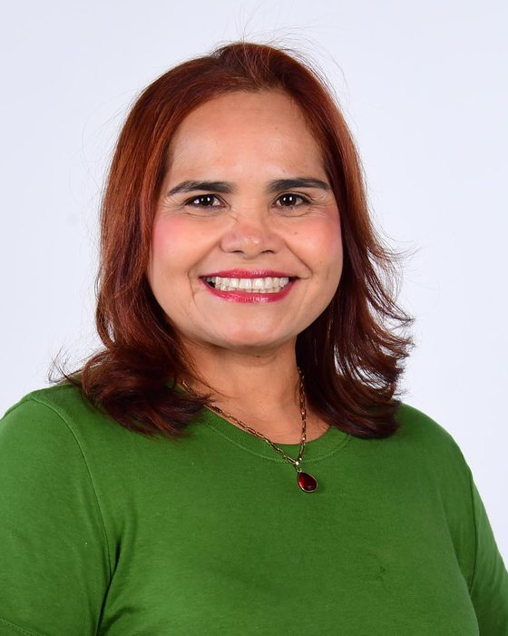

AMAPÁ • 2026
AMAPÁ • 2026Minha colinha
Digite os números dos candidatos que você quer lembrar.

44577
A identificação acima apresenta dados da candidatura de Elizete Trindade. Os demais campos são preenchidos pelo próprio usuário. Confira os dados nos canais oficiais da Justiça Eleitoral.